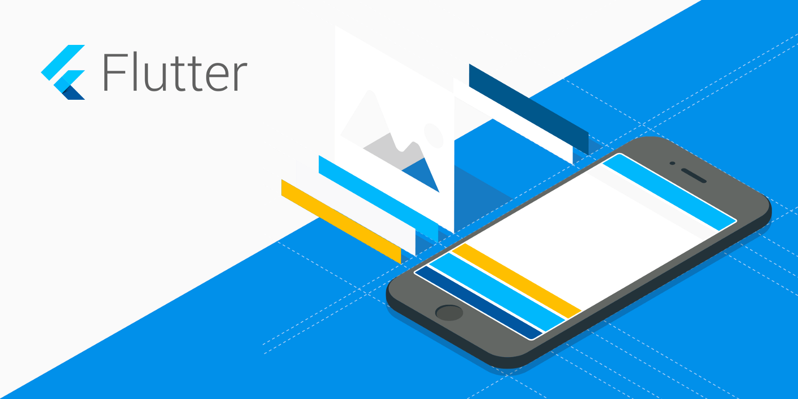
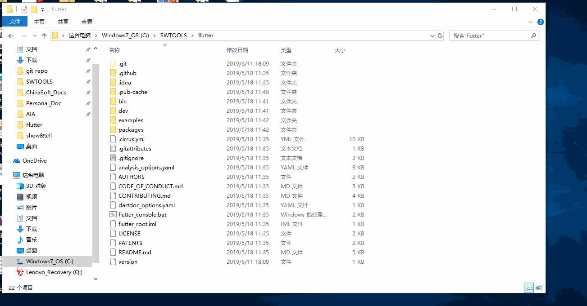
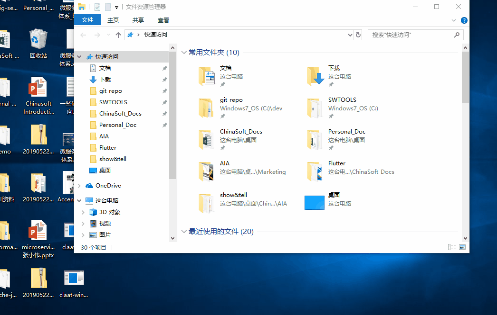
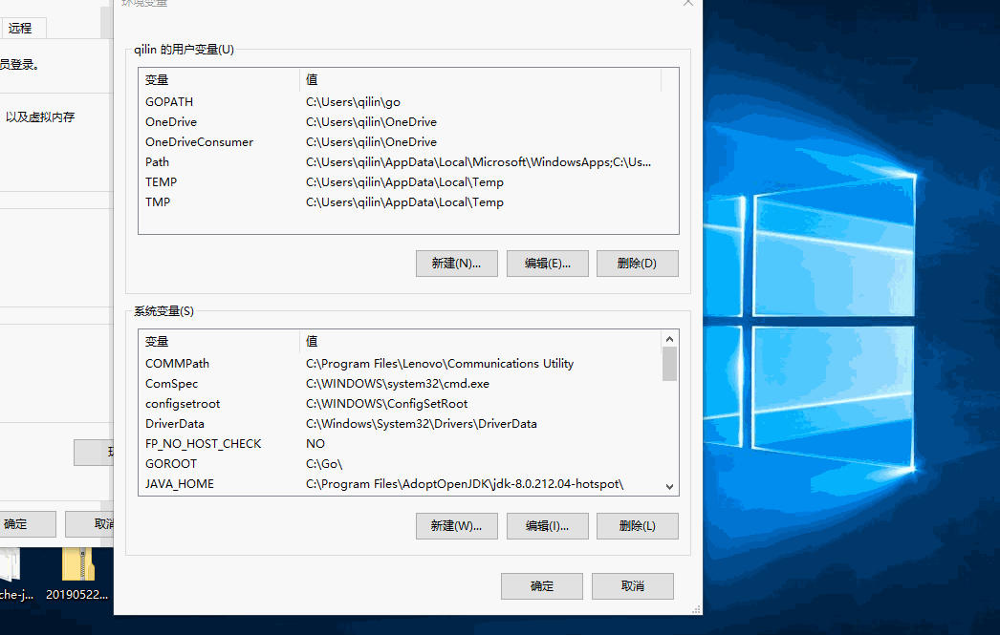
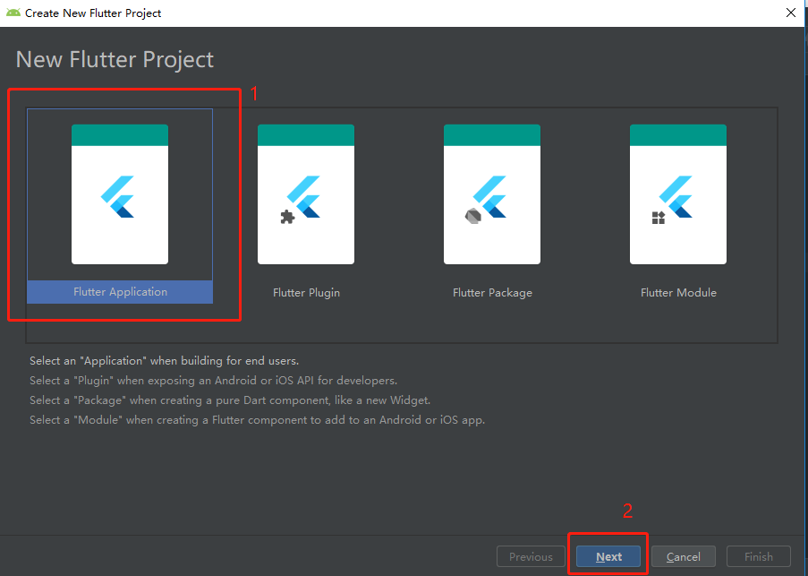
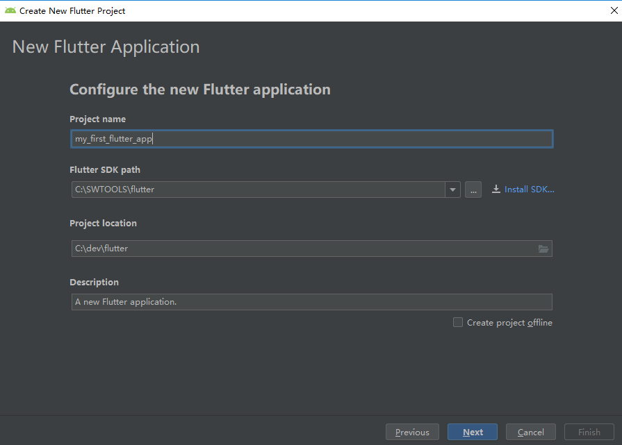
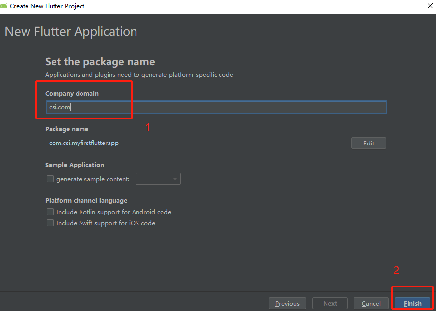
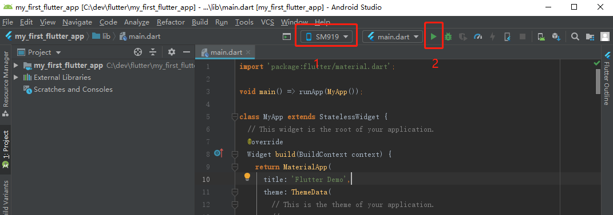
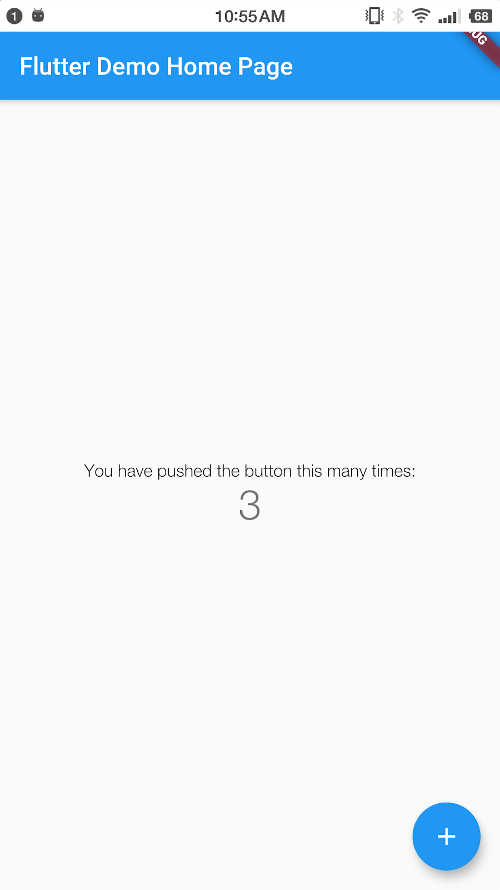

Last Updated: 2019-06-12
什么是Flutter
Flutter是一个由谷歌开发的开源移动应用软件开发工具包，用于为Android和iOS开发应用，同时也将是Google Fuchsia下开发应用的主要工具。
更多的交给Google自己去吹。
你将会完成什么(What you'll build)
在本次课程中，你将从0开始搭建Flutter的开发环境。你将会：
- 安装Flutter SDK
- 安装Android Studio和VS Code作为编辑器
- 随缘写出第一个Flutter Demo
你会学习到什么(What you'll learn)
- 如何安装Flutter SDK
- 如何配置环境变量
- 如何检查SDK是否安装成功
- 学习如何连接手机和电脑
- 如何建立一个Flutter项目并跑在手机上（随缘）
本课程模板文件已经准备好，如果需要代码的地方也只需要简单的复制粘贴即可。
你需要准备些什么(What you'll need)
- 一台电脑
- 能自由访问资源的网络
下载SDK
用迅雷下载以下安装包以获取Flutter SDK的v1.5.4-hotfix稳定版本。用迅雷是因为它会帮你自动下到墙外资源，如果能科学上网的话也可以用浏览器直接下。
flutter_windows_v1.5.4-hotfix.2-stable.zip
解压zip包
解压缩zip文件并将包含的flutter放置在Flutter SDK的所需安装位置（例如C:\ src\flutter;不要将Flutter安装在需要提升权限的C:\Program Files\之类的目录中）。
本教程中，我们把解压后的文件放在C:\SWTOOLS\flutter目录下。
运行命令行
在flutter目录中找到文件flutter_console.bat。 双击启动它。

右键点击"我的电脑"或者"这台电脑"，在弹出框中选择"属性"，然后点击高级系统设置，再点击环境变量。

在用户变量下，检查是否有名为Path的条目：
- 如果该条目确实存在，请将完整路径附加到flutter \ bin，在本教程中需要填入的路径为C:\SWTOOLS\flutter\bin 英文输入法下的分号; 作为现有值的分隔符。Windows 10下面应该不需要。
- 如果该条目不存在，请创建一个名为Path的新用户变量，其中包含flutter \ bin的完整路径作为其值。

从命令行或者刚才双击的flutter_console.bat中运行flutter doctor这个命令，以检查flutter平台的依赖情况。
在这里我执行的命令为：
C:\Users\qilin>flutter doctor
结果如下:
[-] Android toolchain - develop for Android devices
• Android SDK at D:\Android\sdk
✗ Android SDK is missing command line tools; download from https://goo.gl/XxQghQ
• Try re-installing or updating your Android SDK,
visit https://flutter.dev/setup/#android-setup for detailed instructions.安装Android Studio
下载
- 下载并安装Android Studio。还是建议用神奇的迅雷，因为它可以帮你下到墙外资源。把这个链接(https://dl.google.com/dl/android/studio/install/3.4.1.0/android-studio-ide-183.5522156-windows.exe)复制到迅雷里面就可以了。
- 启动Android Studio，然后浏览"Android Studio安装向导"。 这将安装最新的Android SDK，Android SDK Platform-Tools和Android SDK Build-Tools，这些都是Flutter在开发Android时所需要的。
安装Flutter和Dart插件
打开Android Studio，选择File > Settings > Plugins
在搜索框中输入Flutter并回车，在找到的结果中点击install，待安装完成后重启IDE。
设置Android设备
打开手机的开发者选项，允许USB调试，这里根据厂商不同会有不同的操作，不过一般都集中在Android版本显示那里。
用数据线把手机和电脑连接起来，记住先退出360全家桶、金山、腾讯系(微信除外)的任何一款软件。
在命令行运行flutter devices命令来检查设备连接情况。

新建项目
打开Android Studio，新建Flutter项目。项目名定义为my_first_flutter_app，SDK地址指向我们的Flutter安装地址。完成后点击下一步。设置公司域名为csi.com，其实这里并不影响什么，然后点击Finish



运行项目
第一个红框的内容为连接的设备型号，然后点击第二个红框内的运行按钮。

控制台显示如下内容
Launching lib\main.dart on SM919 in debug mode...
Initializing gradle...
Resolving dependencies...
Running Gradle task 'assembleDebug'...
运行效果图如下所示：

恭喜你成功完成了本课程。